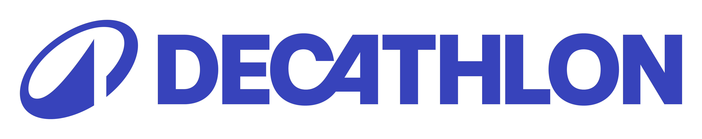

La FFV possède plusieur sponsor pour un total de 11 avec un partenaire majeur qui est la banque populaire, 5 fournisseur officiel et 6 partenaire institutionnel
partenaire majeur
Depuis 2001, la Banque Populaire soutient la Fédération Française de Voile pour l'aider à développer la pratique sur tout le territoire, en aidant notamment au financement de matériel dans les Écoles Françaises de Voile. La Banque Populaire est aussi un acteur supporter des événements FFVoile, en particulier des championnats de France. Elle permet à des milliers de jeunes chaque année de se confronter aux quatre coins de la France. Les meilleurs montent en équipe de France Jeunes puis en équipe de France Olympique, toujours accompagnés par la Banque Populaire.
fournisseur officiel

la Fédération Française de Voile et Tribord, la marque de voile du groupe Decathlon, s’engagent pour l’olympiade 2021- 2024. Cet accord, construit sur la base d’une vision commune du développement de la voile, vise à faciliter à la pratique. Il permettra notamment de co-créer des produits adaptés, de soutenir le développement des clubs de voile, de promouvoir le réseau et les offres des Ecoles Françaises de Voile et d’équiper les Equipes de France. En adéquation avec le plan de développement de Tribord et le Projet Sportif Fédéral de la FFVoile l’ensemble des collaborations viseront également à produire un maximum de produits éco-conçus.

La Mutuelle assurance des instituteurs de France (MAIF) est une société d'assurance mutuelle française créée en 1934 dont le siège est situé à Niort, dans les Deux-Sèvres. Régie par le code des assurances, elle propose historiquement ses services aux enseignants, et, depuis l’an 2000, aux salariés de l’économie sociale et solidaire et des collectivités territoriales.

Yamaha Motor est un fidèle partenaire des Equipes de France de Voile. Chaque année l'entreprise fournit aux entraîneurs des Equipes de France des moteurs performants et puissants, ce qui permet de suivre au mieux une nouvelle génération de bateau qui va de plus en plus vite, à l'exemple des Nacra 17 dotés de foils. En 2019, Yamaha Motor propose à tous les clubs affiliés FFVoile une belle remise sur une gamme de moteurs quatre temps, des moteurs qui consomment moins et qui sont dans la mesure du possible, plus respectueux des océans !
Marque emblématique du sportwear à la Française, Paris 2024 annonce avoir choisi Le Coq Sportif le 5 mars 2020 comme équipementier, technique et de représentation, pour les équipes de France olympique et paralympique de 2021 à 2024
partenaire institutionnel

La Marine Nationale est un partenaire historique de la Fédération Française de Voile. La Marine et la voile ont une longue histoire commune. Chaque année, la Marine embauche une dizaine d'athlètes des Equipes de France en Contrat d'Insertion Professionnelle (CIP). C'est une belle façon d'aider les athlètes dans leur carrière sportive, car au-delà de l'aménagement du temps de travail très réduit, cela permet aux athlètes d'avoir un salaire mais aussi un emploi à la fin de leur carrière olympique. Cette stabilité d'emploi mais aussi financière permet aux athlètes d'avoir pour seul cap et seul objectif la médaille olympique, comme en témoigne Charline Picon, militaire et médaillée d'Or à Rio en 2016.

Le Comité national olympique et sportif français (CNOSF) représente le mouvement sportif français, et notamment les fédérations, sur le territoire national et à l'international. Il est l’interlocuteur privilégié des pouvoirs publics, mène des actions d’intérêt commun au bénéfice des fédérations. Il entreprend en leur nom ou avec elles, et dans le respect de leurs prérogatives, toutes activités d’intérêt commun de nature à encourager le développement du sport de haut niveau ainsi que du sport pour tous.
L'ANS a pour objectifs le financement et l'organisation du sport en France (développement de la pratique sportive pour tous). En outre, l'ANS tend également à développer le haut niveau et la haute performance, notamment dans la perspective des jeux Olympiques et Paralympiques à Paris en 2024. (objectifs 80 médailles).

Le ministère chargé des Sports a la responsabilité de définir les grands objectifs de la politique nationale du sport, d’en fixer le cadre juridique, notamment à travers le code du sport, et de veiller au respect de l’intérêt général.La politique sportive nationale se structure autour de quatre domaines d’action : le développement du sport pour tous, l’organisation du sport de haut niveau, la prévention par le sport, la protection des sportifs et la lutte contre les dérives intolérables que constituent le dopage, la violence, le racisme, la tricherie et toutes les formes de discrimination, la promotion des métiers du sport et le développement de l’emploi sportif.

Fondée à Paris en octobre 1907, l'IYRU International Yacht Racing Union, a changé de nom le 5 août 1996, pour devenir l'International Sailing Federation (ISAF). L'ISAF est reconnue par le comité international olympique (CIO), comme étant l'autorité dirigeant la voile mondiale et gère la voile aux Jeux olympiques. Elle assure la promotion de la voile, par ses cent-vingt-et-une fédérations nationales. Ses responsabilités vont de l'organisation des régates, l'édition de règles de jauge et de course, à la formation des entraîneurs, en passant par l'agrément de séries internationales et le classement des sportifs.
Terre de Jeux 2024 est un label destiné à tous les niveaux de collectivités territoriales et au mouvement sportif (fédérations, clubs) qui souhaitent, quels que soient leur taille et leurs moyens, s’engager dans l’aventure des Jeux. Ce label est destiné à mettre en valeur leurs bonnes pratiques et à inciter à mettre encore plus de sport dans le quotidien, partout en France.